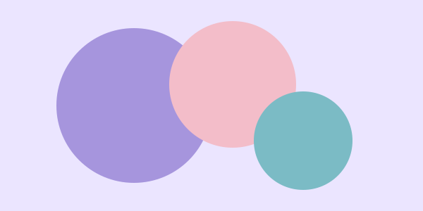

Тестовый раздел
Перейдите на отдельную страницу для проверки кнопки.
Открыть разделТЕСТОВЫЙ САЙТ
На этом сайте можно проверить загрузку, прокрутку, переходы и нажатия. Формы оплаты и внешние сервисы не подключены.
Перейдите на отдельную страницу для проверки кнопки.
Открыть раздел
Браузер должен открыть страницу и выполнить действие.
О тестеЭтот раздел расположен ниже, чтобы можно было проверить прокрутку.
Перейти к проверкеТестовая страница · все ресурсы локальные